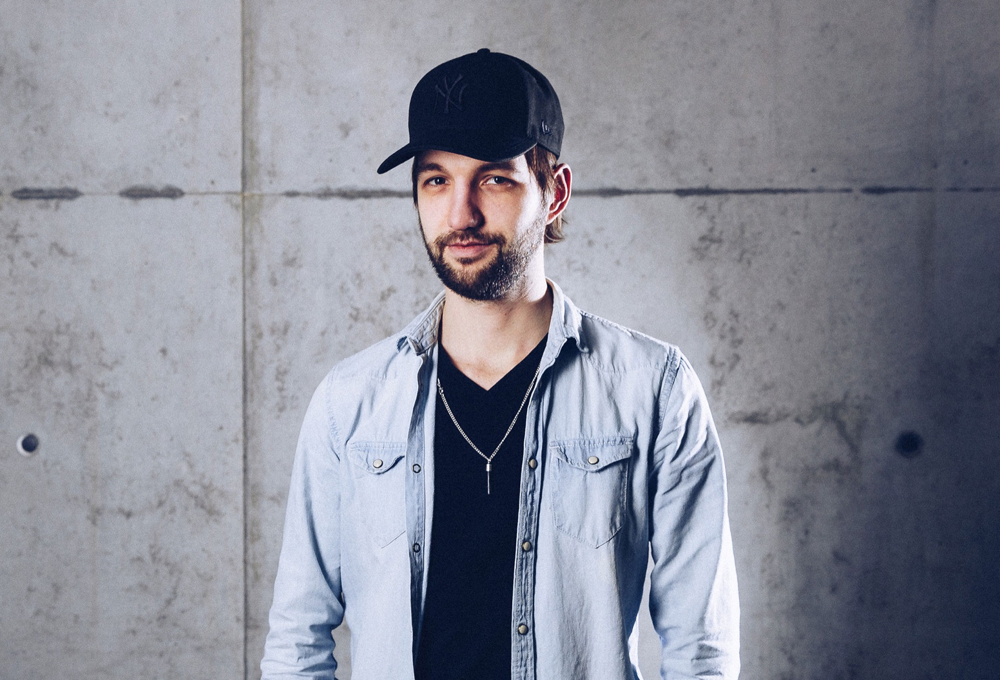

Viewing Room
Stills im Passepartout.
Eine ruhige Fotografie-Auswahl mit viel Weißraum. Jedes Bild bekommt Abstand, Gewicht und eine eigene Lesbarkeit wie in einer kleinen Ausstellung.
White space
Nicht klicken und schließen, sondern betrachten.
Zur Auswahl
01 / 10Wedding Reportage

Reportage · Portrait · Emotion
Wedding Reportage
Ein Moment, der nicht gestellt wirkt. Reportagefotografie lebt von Nähe, Timing und dem Vertrauen, dass ein Bild auch leise erzählen darf.
02 / 10Portrait

Portraitfotografie · Freiburg/Basel
Portrait
Ein Portrait braucht Klarheit, nicht Dekoration. Licht, Haltung und Blick sollen zusammenkommen, ohne die Person zu überformen.
03 / 10Personal Branding

Markenfotografie · Kameramann
Personal Branding
Menschen, Arbeitsweisen und Markenidentität werden sichtbar, wenn das Bild nicht nur zeigt, wer jemand ist, sondern wofür die Person steht.
04 / 10Lighting Reportage

Behind the Scenes · Reportage
Lighting Reportage
Set-Momente sind oft die ehrlichsten Markenbilder: konzentriert, technisch, ungestellt und trotzdem voller Atmosphäre.
05 / 10Direction Moment

Dokumentation · Set
Direction Moment
Regie ist Kommunikation. Gute Produktionsfotografie hält genau diese Übergänge fest: erklären, prüfen, reagieren, weiterdenken.
06 / 10Camera Rig

DoP · Equipment · Still
Camera Rig
Technik ist nie Selbstzweck. Sie wird interessant, wenn sie den Look, die Bewegung und die erzählerische Präzision eines Projekts trägt.
07 / 10Production Team

Reportagefotografie · Prozess
Production Team
Hinter jedem starken Bild steht ein Prozess. Diese Art Fotografie macht Zusammenarbeit sichtbar, ohne sie künstlich zu inszenieren.
08 / 10Creative Tech

Markenbild · Digital
Creative Tech
Digitale Produktion braucht Bilder, die Kompetenz und Neugier zugleich zeigen. Ruhig, präzise und mit einem Blick für Details.
09 / 10Entertainment Still

Campaign Still · Entertainment
Entertainment Still
Entertainment-Bilder dürfen größer denken. Trotzdem entscheidet oft der einzelne Frame, ob eine Kampagne Atmosphäre bekommt.
10 / 10Filmischer Moment

Cinematic Still · Kampagne
Filmischer Moment
Ein gutes Still kann wie ein Film in einem einzigen Atemzug funktionieren: Licht, Bewegung, Spannung und eine offene Geschichte.